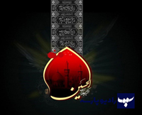

عاشورا،طرحی برای زندگی فردی و اجتماعی
گوینده :احمد آکوچکیان
روانشناسی رشد در بستر عاشورا به بررسی تأثیر این واقعه بر رشد فردی و اجتماعی میپردازد. عاشورا با مفاهیمی چون ایثار، شجاعت و مقاومت الهامبخش تحول شخصیتی و معنوی است. آموزههای این واقعه به افراد کمک میکند تا در برابر ناملایمات مقاومت کنند و ارزشهای اخلاقی را در جهت تقویت هویت فرهنگی و مذهبی خود بپذیرند. درک و بهکارگیری این اصول میتواند در رشد روانی و تقویت حس همبستگی اجتماعی مؤثر باشد.